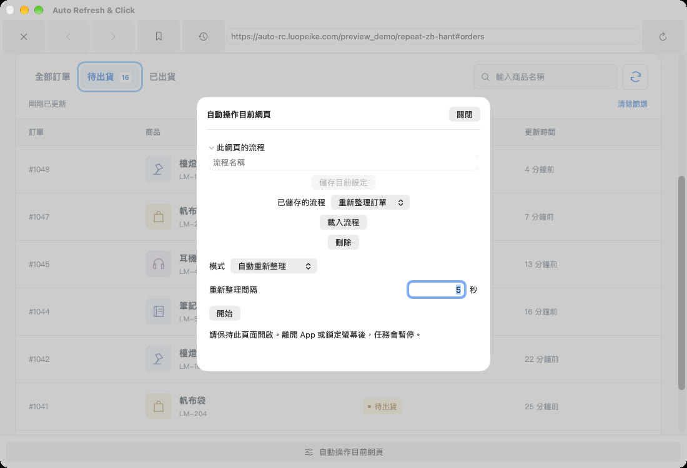

iPhone / iPad
需要 iOS / iPadOS 15.4 或更新版本。 在系統設定中開啟 App → Safari → 延伸功能；舊系統為設定 → Safari → 延伸功能。啟用 Auto Refresh & Clicker，並允許存取需要使用的網站。
Auto Refresh & Clicker
每天都要開啟同一份訂單清單嗎？在首頁選取「在 App 內打開網頁」，即可從書籤或最近瀏覽的網頁回到常用頁面。若網頁已在 Safari 開啟，也可直接使用延伸功能。

可直接選取沒有文字的圖示，也可輸入按鈕或連結名稱。若名稱中的編號會改變，可啟用萬用字元，用 * 代表變動的部分。找不到唯一可用的相符項目時，任務就會停止。 *_AVS_*
需要 iOS / iPadOS 15.4 或更新版本。 在系統設定中開啟 App → Safari → 延伸功能；舊系統為設定 → Safari → 延伸功能。啟用 Auto Refresh & Clicker，並允許存取需要使用的網站。
需要 macOS 12 或更新版本，以及 Safari 15.4 或更新版本。 開啟已安裝的 App，選擇開啟 Safari 設定，在延伸功能中啟用 Auto Refresh & Clicker。接著開啟網頁，點擊 Safari 工具列中的擴充功能圖示。
從 Chrome 線上應用程式商店安裝。在 Chrome 的擴充功能選單中依需求固定圖示，再於目標網頁開啟擴充功能。
適合需要重新載入整頁的看板或狀態頁面。以下以每 10 秒重新整理一次為例。
適合需要先重新整理網頁，再點擊按鈕或依序開啟連結的情境。
適合有獨立更新圖示的清單，尤其是整頁重新整理會讓篩選條件恢復預設值的網頁。
安裝後至少開啟一次 Mac App，再查看 Safari 設定 → 延伸功能。需要 macOS 12 或更新版本，以及 Safari 15.4 或更新版本。重新開啟 Safari 後仍未出現，請聯絡支援並附上版本號與安裝來源。
請開啟一般的 http 或 https 網頁，並在 Safari 設定中允許擴充功能存取這個網站。瀏覽器設定、新分頁與部分受保護頁面無法執行任務。先查看擴充功能裡的錯誤提示，再嘗試啟動。
先確認按鈕可見且可點擊，再開啟擴充功能，重新選取確切的按鈕。網頁改變後，儲存的目標可能不再適用；若標題符合多個按鈕，也需要重新選取。
請使用大於零的整數秒，並填寫每個點擊步驟。修改執行中的任務後，請套用變更，再查看任務摘要以確認生效的設定。
執行任務時請保持 Safari 在前景、裝置處於解鎖狀態。進入背景或鎖定螢幕時，iOS 和 iPadOS 可能暫停瀏覽器任務，無法保證持續在背景執行。
請附上裝置、系統版本、瀏覽器版本、App 版本、使用模式與完整錯誤提示。如果是內部或私人網站，描述按鈕和操作結果即可，不必提供網址或機密資料。
聯絡支援